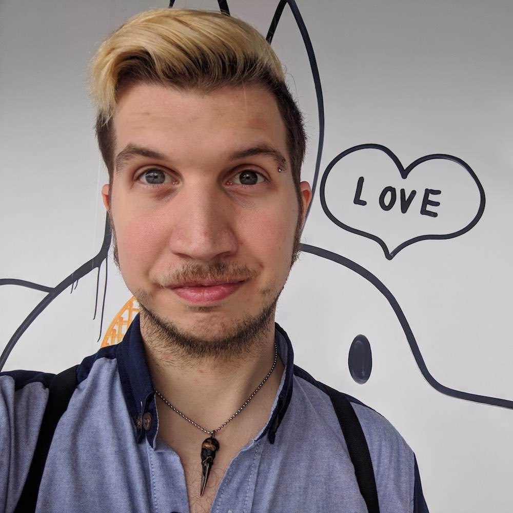

About us
We are Bangkok based network from volunteers who offer mental health consultation.
We currently don't have an office and provide our services on safe spaces which are also convenient for the person in distress.
Because conventional psychiatrists and psychologists are either cannot be afforded or the waiting lists are too long.
We currently only offer english consultation services but very soon offer our services in Thai Language aswell.
The Founder

Robert Ernst: I am since 8 years in Bangkok and saw many young people struggle with mental illnesses. I am unhappy how expensive and hard the access to useful healthcare is. With CrazyBrainBangkok we offer supportive mental healthcare for free on a NGO basis. We sadly don't have the same legal status as a clinic but this enables us to go a way which is maybe more helpful for those in distress.
If you contact us via Line there is a good change that you will be talking with me. We plan to extend our services offered in Thai Language aswell. Currently we are looking for the right people to extend our staff.
We currently don't provide a physical location but planning in doing so when we secured a sufficient amount of founding. We want to be reachable for people and thus a location near to MRT/BTS will be necessary, which makes this endeavor harder.